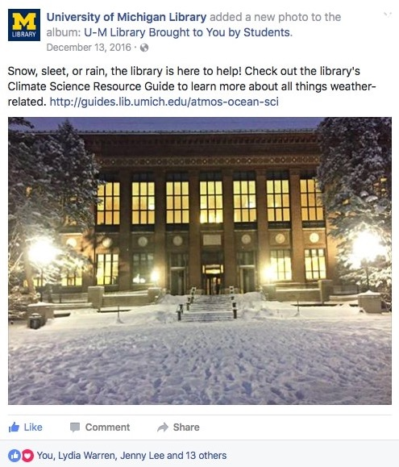
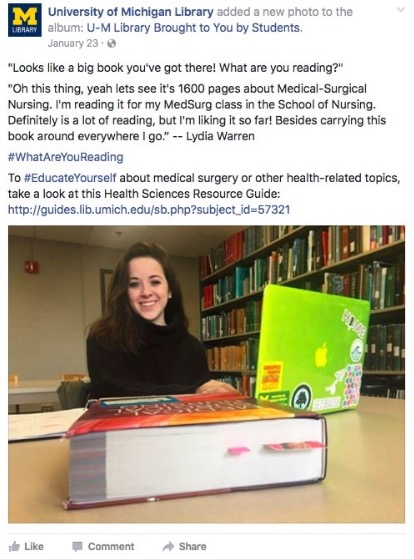
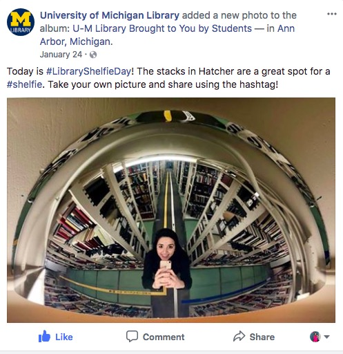

In my position as a Library Engagement Ambassador, I am part of the Social Media team in which I create posts for the University of Michigan Library's Facebook and Twitter Accounts in an effort to increase digital engagement from followers on these channels. The quality, creativity, and engagement of my posts has improved dramatically over the course of my work on the Social Media team, and have truly added value to the University of Michigan Library's online presence.
Below you can find a collection of my various posts for the library's Facebook and Twitter.


